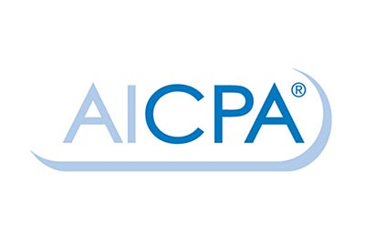

Licensed CPA leadership
Jay H. Guttmann is presented on SRG's website as a CPA Partner licensed in New York and New Jersey.
SRG Advisors, LLC
A CPA-led review can help uncover planning gaps across your entity structure, real estate, estate or trust considerations, and upcoming tax decisions before timing limits the available options.
Applications are reviewed before scheduling.

Firm Peer Review SRG's site states the firm participates in peer review tied to AICPA and NJCPA standards.SRG Credibility
These public firm details are positioned conservatively for a CPA/tax advisory audience that values licensing, review standards, and relevant experience.
Jay H. Guttmann is presented on SRG's website as a CPA Partner licensed in New York and New Jersey.
Jay's profile references prior work with PriceWaterhouse Coopers, Legg Mason, and BDO Seidman, mainly in financial services.
SRG's site references a successful firm peer review and points visitors to AICPA/NJCPA peer review status resources.
The site lists Hackensack, New York City/Manhattan, Teaneck, Fort Lee, Paramus, and surrounding communities.
Who This Is For
Owners who need coordinated tax planning, entity review, payroll, bookkeeping, or advisory support as the business grows.
Investors, property owners, and real estate operators with depreciation, 1031, basis, passive activity, or multi-entity questions.
Professionals with equity compensation, multi-state income, K-1s, side businesses, or meaningful planning decisions ahead.
Families reviewing estate, trust, gifting, succession, charitable, or long-term financial decisions with tax implications.
Planning Timing
A timely CPA-led review can clarify the facts before a transaction, structure change, filing deadline, or long-term planning step becomes harder to adjust.
Qualification Fit
Review Your Tax Plan
SRG reviews the connected facts behind your business, property, and family planning decisions before recommending an appropriate next step.
Your entity, payroll, ownership, and growth plans may no longer align with the tax structure the business started with.
Review Your Business Tax PlanBasis, depreciation, passive activity, and transaction timing can create unanswered tax questions before a property move.
Review Your Real Estate Tax PlanTrust, gifting, succession, and estate decisions need tax coordination before documents or transactions are finalized.
Review Estate and Trust PlanningThe Risk
Many high-value taxpayers only revisit their structure during tax filing season. By then, some decisions may already be locked in, documentation may be incomplete, and planning windows may be narrower.
SRG Advisory Positioning
SRG Advisors reviews the facts, asks the right questions, and helps determine whether there are practical tax planning or advisory opportunities worth pursuing.
Intro Video
Once added, the video should explain who the review is for, what SRG may look at, and what qualified prospects should expect after applying.
Step 1 of 2
Share your basic contact information first. You will then continue to the detailed Private Strategy Review.
Provide your name, email address, phone number, and consent.
Answer the existing qualification questions about your situation.
SRG reviews the complete application before any booking link is offered.
Do not submit tax returns, IDs, financial statements, or other sensitive documents through this initial form. Submission does not create a CPA-client relationship. Review the Privacy Policy.
Prefer to speak first? 201-525-1222Connecting to the secure SRG Advisors form. This can take a few seconds.
If the form stays blank, refresh this page or call 201-525-1222.
After You Apply
The goal is to protect SRG's calendar while giving serious business owners, investors, professionals, and families a clear path into review.
Client Feedback
"It was a pleasure getting such quick response to any small or big question."
"I always appreciate your expert guidance & help."
"Thank you for the clear & professional report."
Simple Process
Submit a short qualification form with your contact details and planning concerns.
The team reviews whether your situation appears aligned with SRG's advisory focus.
If there is a fit, the next step can be a scheduled consultation or intake call.
SRG outlines appropriate next steps, scope, and engagement requirements if both sides proceed.
FAQ
No. SRG Advisors does not guarantee tax savings, refunds, or specific outcomes. The consultation is used to review your facts, identify potential planning areas, and determine appropriate next steps.
No. This funnel is intended for prospects with more complex business, real estate, estate, entity, or asset situations who may need advisory review before engagement.
The main page is designed for qualification first. Qualified prospects can be routed to a booking step or thank-you page after the application is reviewed.
Be ready to summarize your business, real estate, income, entity, estate, or asset situation and any upcoming decisions or concerns you want reviewed.
No. A CPA-client relationship begins only after SRG Advisors formally accepts the engagement and the required agreement is completed.
Next Step
Start with the private application. SRG will review your situation and determine whether a strategy call is the appropriate next step.
Applications are reviewed before scheduling.
The information on this page is for general informational purposes only and should not be treated as tax, accounting, legal, investment, or financial advice. Submitting a form or requesting a consultation does not create a CPA-client relationship. SRG Advisors, LLC does not guarantee tax savings, refunds, or any specific outcome. A professional relationship begins only after SRG Advisors accepts the engagement and all required agreements are completed.